← 返回阅读库 · 原论文目录
论文讲解阅读文档 · 论文精读 · v239
华人团队再登《Nature》！光学AI生成模型
视频时长 00:08:28；讲解文字 2,556 字符；提取讲解画面 85 张。按视频原顺序阅读，每段文字保留时间戳。
文字来自整段视频的自动语音转写，按自然停顿分段，并与 PPT / 论文页面 / 演示画面对齐。未将讲解压缩为摘要；术语、数字和口述公式请结合画面及原论文核对。 阅读稿已校正规范部分明确术语误识别；原始逐字稿和每处修改记录另行保留。
讲解画面为源视频截图（640×360），不是可编辑 PPT 文件。全片按每秒 2 帧扫描内容变化，逐步展开页保留；连续动画保留代表画面。清晰度受源视频限制。
下载完整资料包 · 含离线 HTML、PDF、Word、全部 PPT 画面和字幕。
原论文与材料
Optical generative models · 下载完整 PDF（29 页）
演示音频备注
以下为整理备注，原音另附以便核对。
00:05:53–00:06:05 · 本段语音转写中的生成数量、能耗数值与画面所列的单张口径不同，原音另附供核对。
按时间阅读
00:00:00–00:00:01 · 画面 001
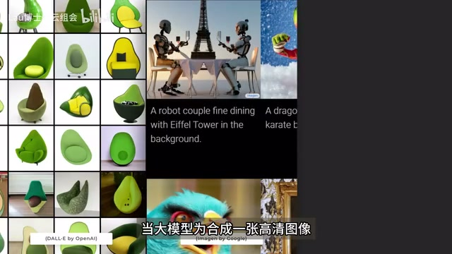
00:00:00–00:00:01 · 画面 001当大模型为合成一张高清图像消耗大量算力时
00:00:01–00:00:05 · 画面 002
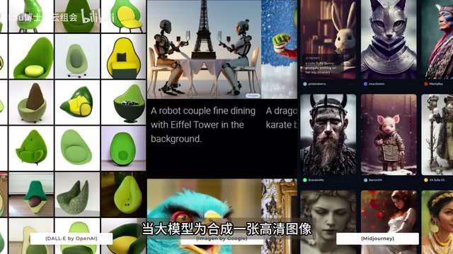
00:00:01–00:00:05 · 画面 002一束光却能在纳秒级的时间内完成复杂的信息传递
00:00:05–00:00:09 · 画面 003
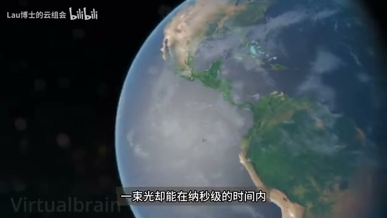
00:00:05–00:00:09 · 画面 003今天要精读的论文不久前发表于 Nature 正刊
00:00:09–00:00:13 · 画面 004
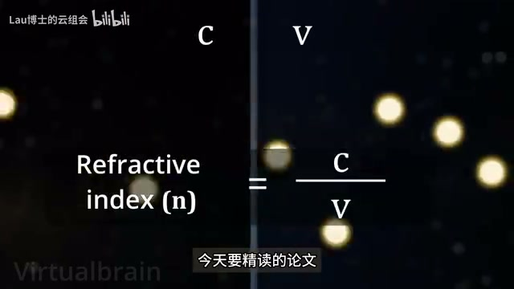
00:00:09–00:00:13 · 画面 004它跳出传统神经网络框架
00:00:13–00:00:17 · 画面 005
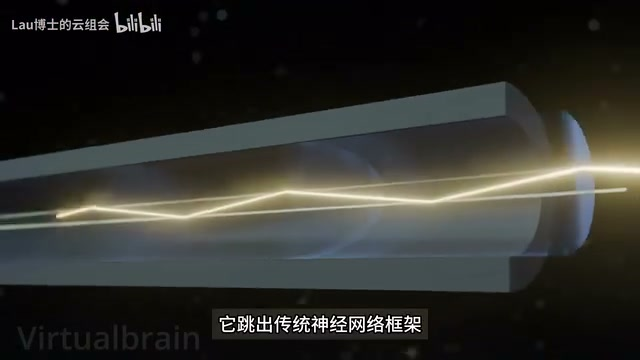
00:00:13–00:00:17 · 画面 005打造出全新光学生成模型彻底解决了传统 AI 生成的三大核心痛点
00:00:17–00:00:21 · 画面 006
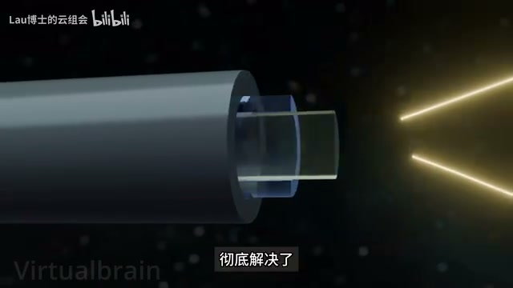
00:00:17–00:00:21 · 画面 006一、推理过程的高能耗与低速度
00:00:21–00:00:22 · 画面 007
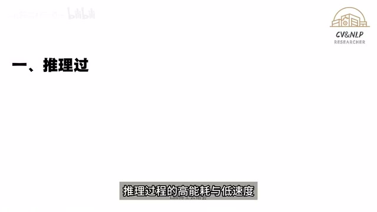
00:00:21–00:00:22 · 画面 00700:00:22–00:00:25 · 画面 008
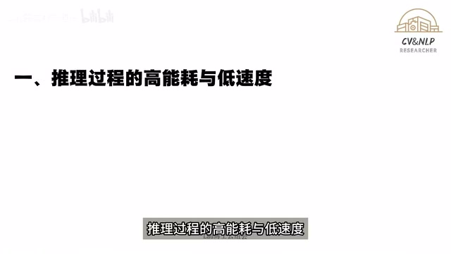
00:00:22–00:00:25 · 画面 008二、模型规模扩大带来的扩展瓶颈
00:00:25–00:00:29 · 画面 009
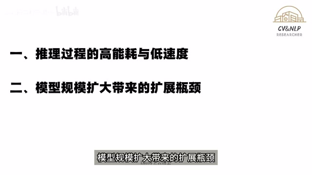
00:00:25–00:00:29 · 画面 009三、生成任务与硬件架构的强绑定限制
00:00:29–00:00:33 · 画面 010
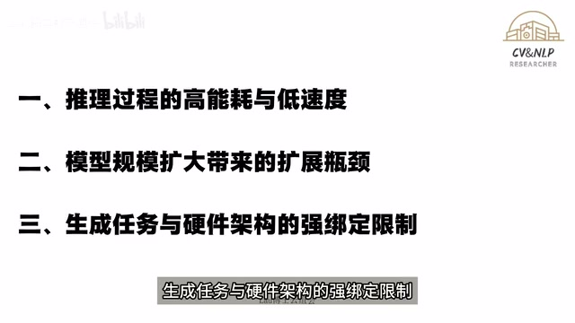
00:00:29–00:00:33 · 画面 010更关键的是它能在可见光波段进行图像合成
00:00:33–00:00:37 · 画面 011
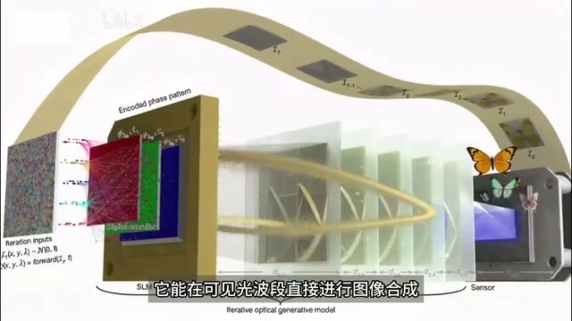
00:00:33–00:00:37 · 画面 011几乎不消耗计算资源
00:00:37–00:00:40 · 画面 012
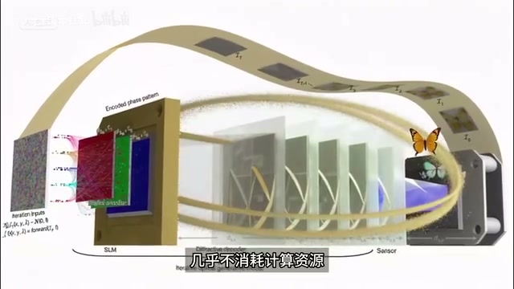
00:00:37–00:00:40 · 画面 012接下来七分钟我们将拆解光学生成模型
00:00:40–00:00:44 · 画面 013
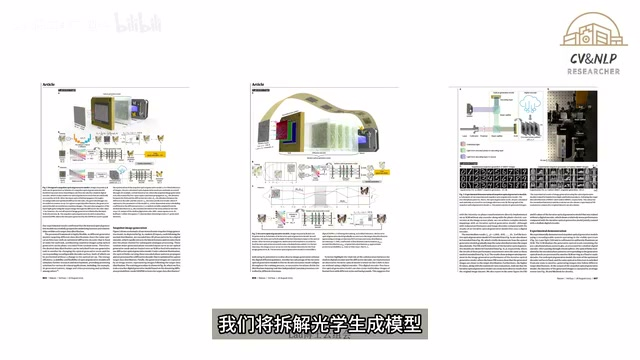
00:00:40–00:00:44 · 画面 013如何以数字编码加光学解码的协同机制
00:00:44–00:00:48 · 画面 014
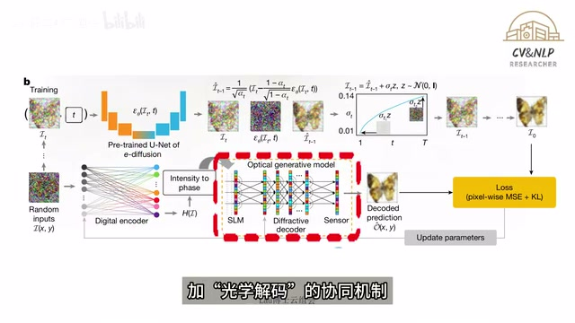
00:00:44–00:00:48 · 画面 014实现图像生成降本增效云组会论文精读系列
00:00:48–00:00:50 · 画面 015
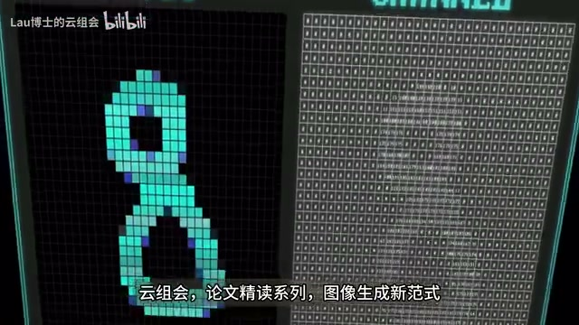
00:00:48–00:00:50 · 画面 015图像生成新范式
00:00:50–00:00:54 · 画面 016
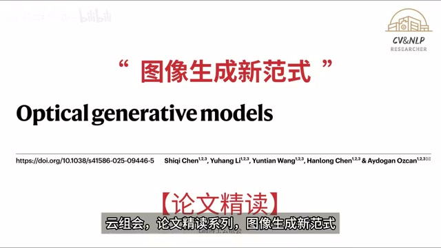
00:00:50–00:00:54 · 画面 016Optical Generative Models欢迎来到 Lau 博士的云组会
00:00:54–00:00:58 · 画面 017
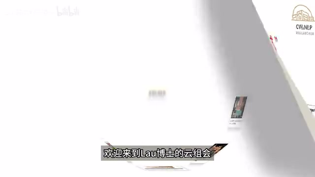
00:00:54–00:00:58 · 画面 017我们每周都将至少有一篇高质量的论文精读发布出来
00:00:58–00:01:02 · 画面 018
00:00:58–00:01:02 · 画面 018相信在一系列的论文学习以后你就能成为人工智能领域的专家
00:01:02–00:01:06 · 画面 019
00:01:02–00:01:06 · 画面 01900:01:06–00:01:09 · 画面 020
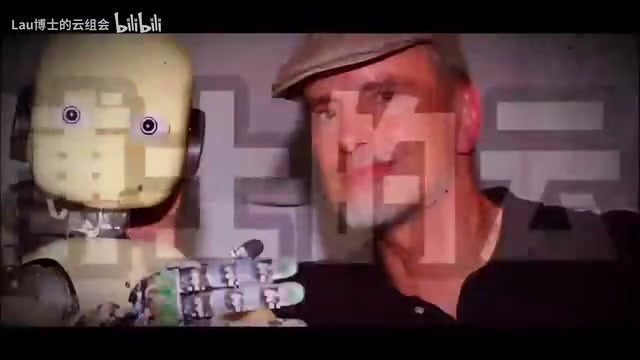
00:01:06–00:01:09 · 画面 02000:01:09–00:01:12 · 画面 021
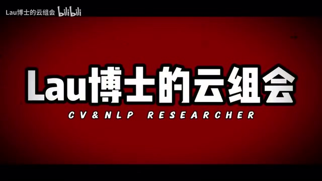
00:01:09–00:01:12 · 画面 02100:01:12–00:01:16 · 画面 022
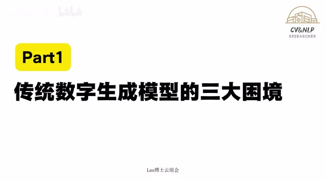
00:01:12–00:01:16 · 画面 022不知道大家最近有没有看新闻继英伟达之后AMD 和 OpenAI 也达成了合作
00:01:16–00:01:20 · 画面 023
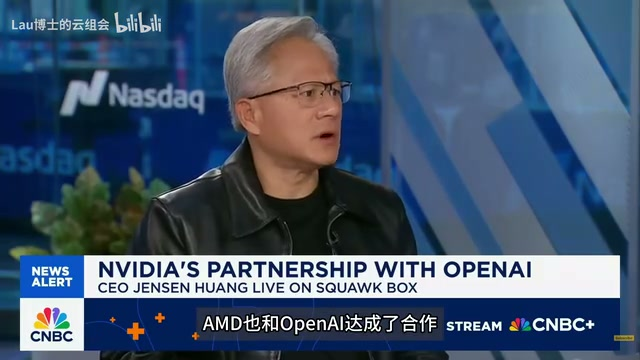
00:01:16–00:01:20 · 画面 023股价辣叫涨的一个迅猛
00:01:20–00:01:24 · 画面 024
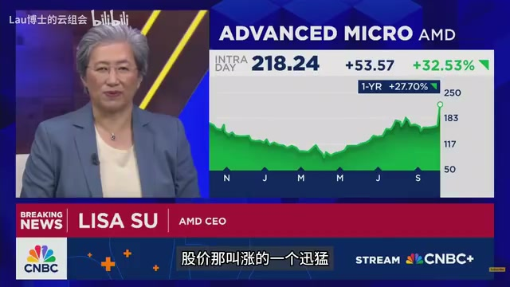
00:01:20–00:01:24 · 画面 024背后的关键就是算力如今主流的 AI 生成模型
00:01:24–00:01:26 · 画面 025
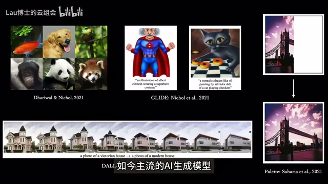
00:01:24–00:01:26 · 画面 025无论是生成对抗网络
00:01:26–00:01:29 · 画面 026
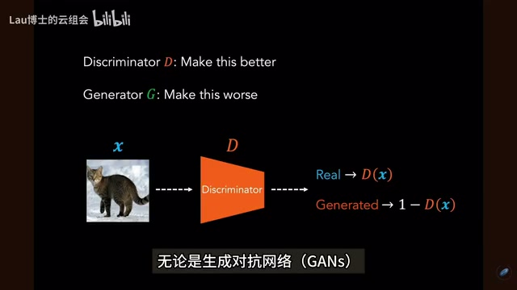
00:01:26–00:01:29 · 画面 026还是扩散模型都陷入了三个难以突破的算力困境
00:01:29–00:01:30 · 画面 027
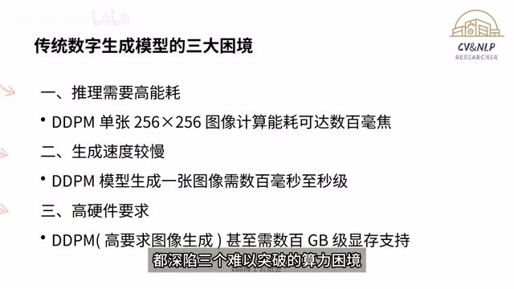
00:01:29–00:01:30 · 画面 02700:01:30–00:01:32 · 画面 028
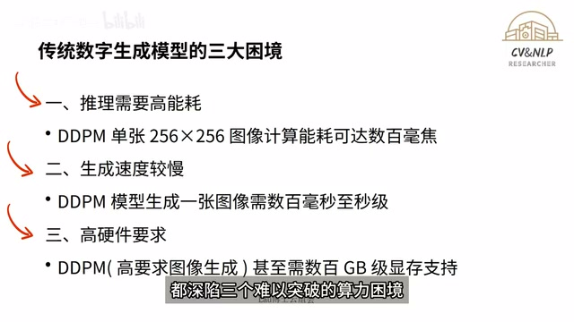
00:01:30–00:01:32 · 画面 028第一个困境是推理需要高能耗
00:01:32–00:02:10 · 画面 029
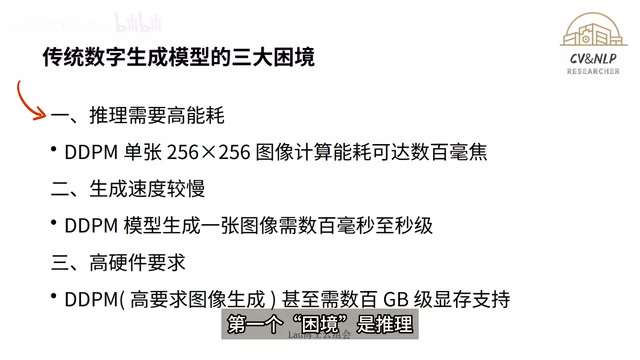
00:01:32–00:02:10 · 画面 029以生成一张 256x256 的图像为例DDPM 当张图像的计算能耗会达到数百毫焦如果是批量生成则需要更多度的电能第二个困境是生成速度慢基础的 DDPM 模型生成一张图像需要百毫秒甚至是秒级而且分辨率的提升会导致推理速度显著下降第三个困境是高硬件要求在进行推理的时候 DDPM 甚至需要数百 GB 的显存支持硬件升级的成本与难度随模型的规模呈线性增长优化算法、压缩参数等传统方案只能缓解这些问题，没有办法从根本上进行解决。而 Nature 的这篇光学生成模型，它突破的地方就在于抛弃了纯数字计算的框架，转而用光线的传播与衍射替代了部分的数字计算，实现了低能耗、高速、灵活的生成能力。预告一下，接下来我们还会加更几期跳出传统框架的 AI 研究。
00:02:10–00:02:12 · 画面 030
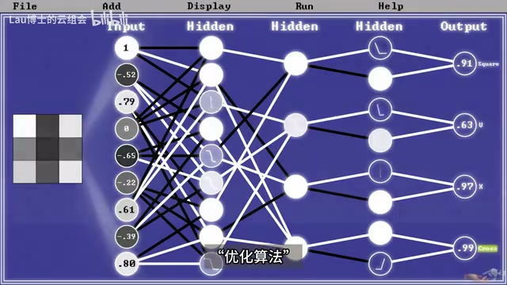
00:02:10–00:02:12 · 画面 03000:02:12–00:02:16 · 画面 031
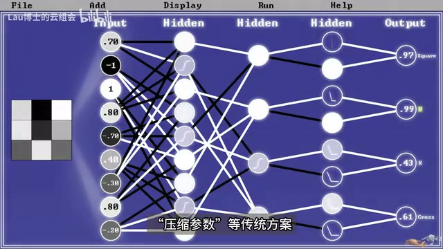
00:02:12–00:02:16 · 画面 03100:02:16–00:02:18 · 画面 032
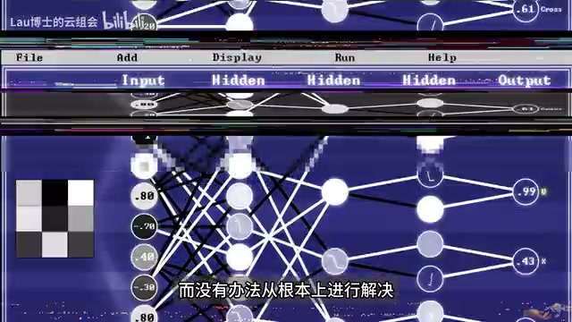
00:02:16–00:02:18 · 画面 03200:02:18–00:02:23 · 画面 033
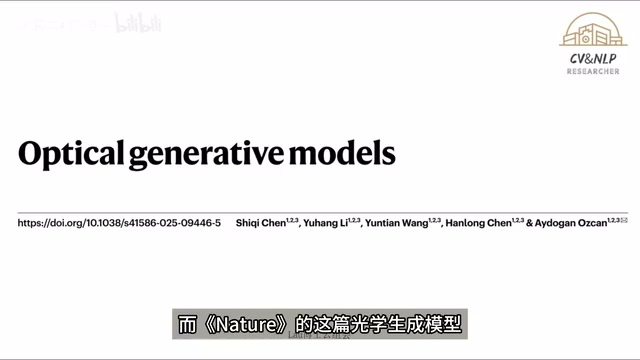
00:02:18–00:02:23 · 画面 03300:02:23–00:02:31 · 画面 034
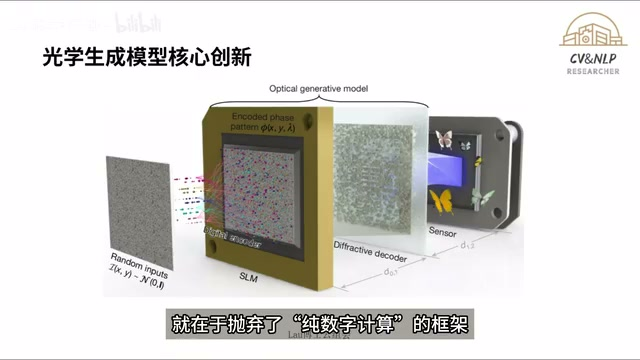
00:02:23–00:02:31 · 画面 03400:02:31–00:02:33 · 画面 035
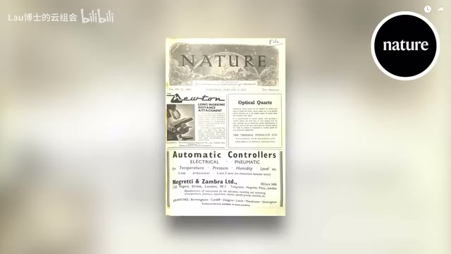
00:02:31–00:02:33 · 画面 03500:02:33–00:02:34 · 画面 036
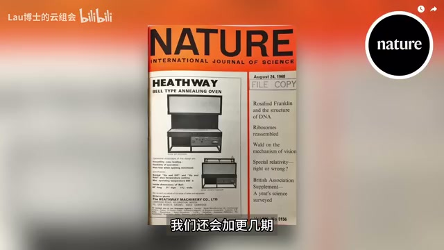
00:02:33–00:02:34 · 画面 03600:02:34–00:02:35 · 画面 037
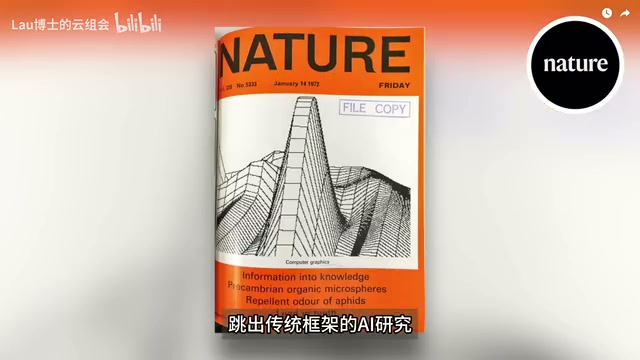
00:02:34–00:02:35 · 画面 03700:02:35–00:02:37 · 画面 038
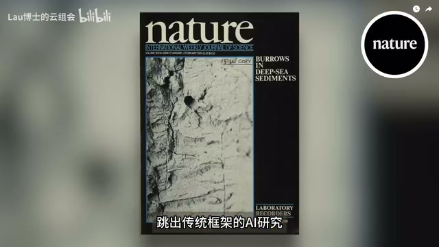
00:02:35–00:02:37 · 画面 038包括 AI 黑客攻击 AI 仿生学等等欢迎关注云组会第一时间 get 到 AI 技术最前沿 OK 我们现在正式进入光学生成模型的技术拆解大家肯定想问光学生成模型和传统的 DDPM 的模型到底有什么区别
00:02:37–00:02:39 · 画面 039
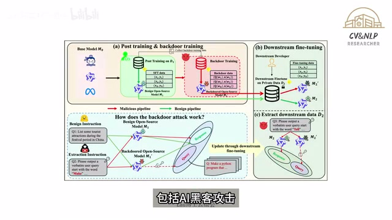
00:02:37–00:02:39 · 画面 03900:02:39–00:02:42 · 画面 040
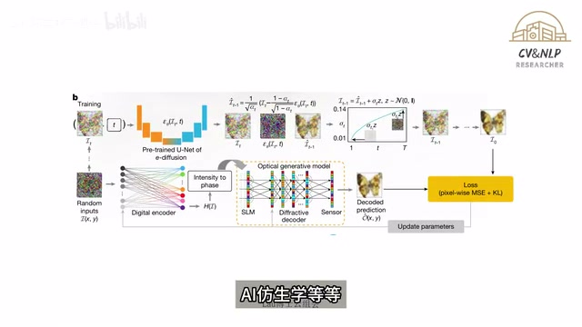
00:02:39–00:02:42 · 画面 04000:02:42–00:02:44 · 画面 041
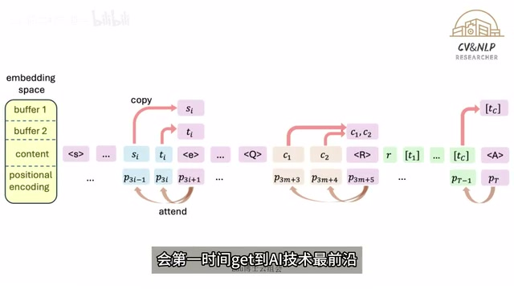
00:02:42–00:02:44 · 画面 04100:02:44–00:02:48 · 画面 042
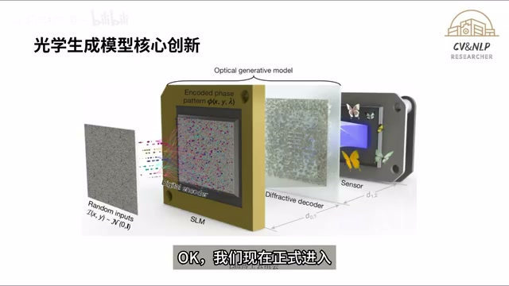
00:02:44–00:02:48 · 画面 04200:02:48–00:02:49 · 画面 043
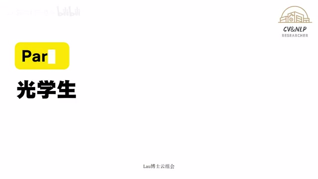
00:02:48–00:02:49 · 画面 04300:02:49–00:02:50 · 画面 044
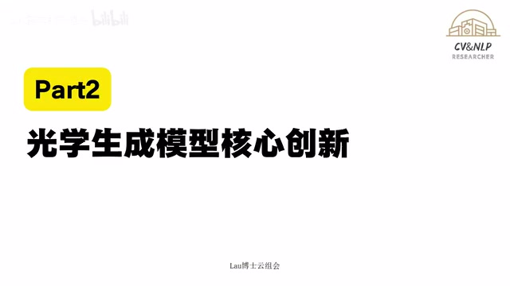
00:02:49–00:02:50 · 画面 04400:02:50–00:02:53 · 画面 045
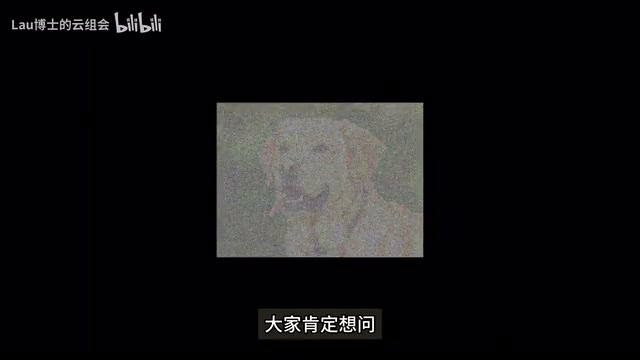
00:02:50–00:02:53 · 画面 04500:02:53–00:02:55 · 画面 046
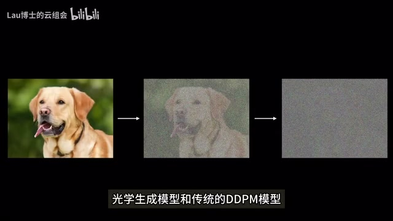
00:02:53–00:02:55 · 画面 04600:02:55–00:02:56 · 画面 047
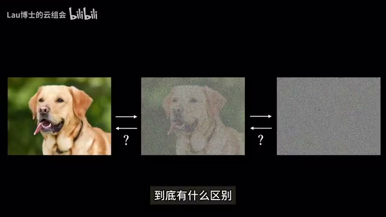
00:02:55–00:02:56 · 画面 047实际上，在训练阶段，光学生成模型依然需要用到 DDPM 作为教师模型进行训练，这一步和传统的 DDPM 没有太大的差异。在学生模型的联合训练当中，教师模型的输出噪声、目标图像配对的数据会作为监督信号，将教师模型的噪声输入学生模型的数字编码器生成相位图案，并通过光学解码得到预测图像。
00:02:56–00:03:36 · 画面 048
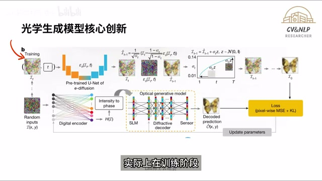
00:02:56–00:03:36 · 画面 048在于教师模型的目标图像计算损失通过梯度下降优化数字编码器的权重使得生成的相位图案能够让光学系统的输出更贴近目标分布的图像当光学生成模型完成训练进入到推理的阶段后教师模型会被完全移除静态光学种子生成直接采样随机噪声通过已优化的数字编码器生成相位图案加载到 SLM 后经过光学解码生成图像整个过程无需教师模型的参与一旦我们理解了这篇论文是从将学生模型的光学生成模型和传统的 DDPM 在推理上进行对比
00:03:36–00:04:11 · 画面 049
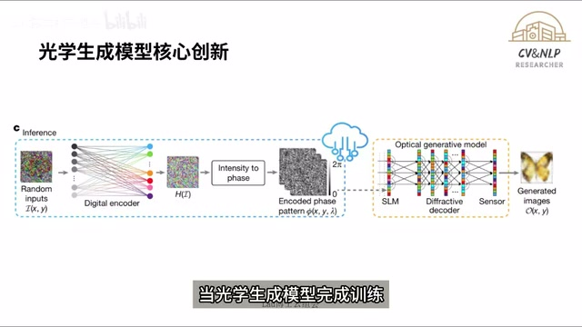
00:03:36–00:04:11 · 画面 049我们也就能把握这篇论文的核心 idea。接下来我们来看详细的实现：1.静态光学种子生成，把数字噪声变成光学种子，具体的步骤如下表所示。这个环节的数字噪声转化成相位图案，其中空间光调制器是关键，相当于光学显示屏接收了电脑给的相位图案，再通过自身的像素调整把数字图案变成了光学信号。
00:04:11–00:04:13 · 画面 050
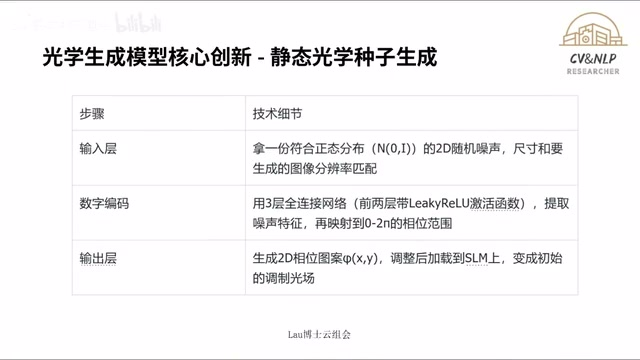
00:04:11–00:04:13 · 画面 05000:04:13–00:04:32 · 画面 051
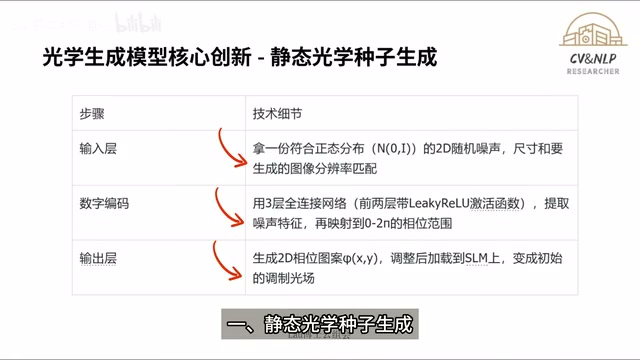
00:04:13–00:04:32 · 画面 05100:04:32–00:04:33 · 画面 052
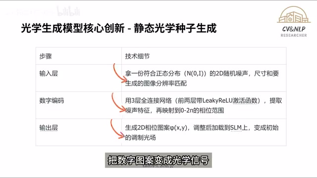
00:04:32–00:04:33 · 画面 05200:04:33–00:04:34 · 画面 053
00:04:33–00:04:34 · 画面 053二、动态光学解码，靠光的特性来合成图像，具体的流程如下表所示。相位图案加载到了 SLM 以后，合成的图像就全靠光的物理特性了，不用去做任何的数字计算。这是它和数字模型最不一样的地方，本质是用光的衍射、干涉规律让带相位信息的光在传播当中自己降噪去拼特征，最后生成符合目标的图像。
00:04:34–00:04:43 · 画面 054
00:04:34–00:04:43 · 画面 05400:04:43–00:05:02 · 画面 055
00:04:43–00:05:02 · 画面 055三、联合训练策略，光学生成模型学会数据分布是通过教师学生模型优化的。教师模型按 DDPM 的标准流程来训练，学好以后冻结参数，持续的输出随机噪声以及目标图像的配对数据给后续的训练。单参考学生就是光学生成模型，把教师模型给的噪声输入编码器生成相位图案，加载到 SLM，激光照射后光场。
00:05:02–00:05:05 · 画面 056
00:05:02–00:05:05 · 画面 05600:05:05–00:05:36 · 画面 057
00:05:05–00:05:36 · 画面 057通过解码器、传感器捕捉生成图最后计算损失、更新参数讲到这里
00:05:36–00:05:40 · 画面 058
00:05:36–00:05:40 · 画面 058我们就能回答刚刚提出的问题光学生成模型和传统 DDPM 模型的本质区别是什么?
00:05:40–00:05:41 · 画面 059
00:05:40–00:05:41 · 画面 05900:05:41–00:05:42 · 画面 060
00:05:41–00:05:42 · 画面 06000:05:42–00:05:43 · 画面 061
00:05:42–00:05:43 · 画面 061两者的差别的根源是在靠什么计算?
00:05:43–00:05:47 · 画面 062
00:05:43–00:05:47 · 画面 062数字模型靠的是电子
00:05:47–00:05:52 · 画面 063
00:05:47–00:05:52 · 画面 063光学模型靠的是光。所以能耗速度差很多。举个例子
00:05:52–00:05:56 · 画面 064
00:05:52–00:05:56 · 画面 064生成 1000 张 MNIST 的图像数字模型要耗 140 到 1580 焦耳。
00:05:56–00:06:06 · 画面 065
00:05:56–00:06:06 · 画面 065而光学模型只要 3.3 到 8 的毫焦那差了好几个数量级。那总之光学生成模型。
00:06:06–00:06:10 · 画面 066
00:06:06–00:06:10 · 画面 066靠的是数字编码转噪声。
00:06:10–00:06:14 · 画面 067
00:06:10–00:06:14 · 画面 067加上光学解码的合成图。既保留了数字模型的复杂的分布能力，又有光学系统快省电的优势，适合边缘计算、实时显示这类对能耗和速度要求高的场景。听到这里，是不是有点 get 到这篇光学生成模型强大的未来潜力的呢？那更多的技术干货、往期 PPT、生涯咨询等，都在云组会的知识星球里查看，评论区置顶即可加入。接下来我们重点看一下实验部分。
00:06:14–00:06:18 · 画面 068
00:06:14–00:06:18 · 画面 06800:06:18–00:06:20 · 画面 069
00:06:18–00:06:20 · 画面 06900:06:20–00:06:24 · 画面 070
00:06:20–00:06:24 · 画面 07000:06:24–00:06:30 · 画面 071
00:06:24–00:06:30 · 画面 07100:06:30–00:06:32 · 画面 072
00:06:30–00:06:32 · 画面 07200:06:32–00:06:34 · 画面 073
00:06:32–00:06:34 · 画面 07300:06:34–00:06:38 · 画面 074
00:06:34–00:06:38 · 画面 07400:06:38–00:06:42 · 画面 075
00:06:38–00:06:42 · 画面 07500:06:42–00:06:43 · 画面 076
00:06:42–00:06:43 · 画面 076实验部分在基础生成领域，本人做了一个很有意思的任务。作者对原始和光学生成的 MNIST 分别做了 100%和 50%比例的训练样本分配，作为下游分类任务的训练集。100%的光学生成数据给到下游分类任务的时候，已经能够达到 99%的水平。
00:06:43–00:06:51 · 画面 077
00:06:43–00:06:51 · 画面 07700:06:51–00:06:52 · 画面 078
00:06:51–00:06:52 · 画面 07800:06:52–00:06:54 · 画面 079
00:06:52–00:06:54 · 画面 07900:06:54–00:07:04 · 画面 080
00:06:54–00:07:04 · 画面 08000:07:04–00:07:16 · 画面 081
00:07:04–00:07:16 · 画面 081在彩色生成领域，Butterflies-100 数据集的 IS 的评估里面，多色光学生成甚至比原图还要高。而在 Celeb-A 的数据集也和原图达到了相同的水平。最后我想分享一下个人看法，抛砖引玉，欢迎同学们在评论区分享你的观点。
00:07:16–00:07:17 · 画面 082
00:07:16–00:07:17 · 画面 08200:07:17–00:07:18 · 画面 083
00:07:17–00:07:18 · 画面 08300:07:18–00:08:28 · 画面 084
00:07:18–00:08:28 · 画面 084尽管这篇文章通篇都围绕了推理来展开，但我第一次读的时候注意力完全集中在训练成本上。当时我很困惑，它和传统的 DDPM 到底有什么区别呢？后来才发现教师模型的 DDPM 的训练部分，实际上差异并不大。真正的差异是在于学生模型的光学推理环节。这部分的能耗与传统的 DDPM 相差了好几个数量级，让我大为的震惊。当大模型能以如此之低的算力和能耗完成推理时，相信这套技术落地以后可以在更多低算力、低能耗的边缘设备上部署，比如智能眼镜这类产品。当然，这一切都有待技术落地以后再深入的讨论。
此外这篇论文也证明了 AI 生成领域的突破不一定是来自更大的模型或是更多的数据当数字计算面临着能耗与速度的瓶颈时回归物理世界的基本规律或许是 AI 生成内容通向高效、通用、低能耗的最短路径
00:08:28–00:08:28 · 画面 085
00:08:28–00:08:28 · 画面 085转写与来源说明 · 0 个自动复核提示
保留 74 个原始语音片段，0 个片段触发自动复核提示。提示仅用于定位可能的术语、重复或识别问题，不等于已确认错误。
讲解画面为源视频截图（640×360），不是可编辑 PPT 文件。全片按每秒 2 帧扫描内容变化，逐步展开页保留；连续动画保留代表画面。清晰度受源视频限制。
原视频：paper/合集_2026-10-16_论文精读/华人团队再登《Nature》！光学AI生成模型【论文精读】.mp4
SHA-256：3d922ebea3850b095023288537a066fbd7ec59fd78fca7dc055342ee78b53bb3
全文按视频语音与画面制作。原论文可从上方链接下载；完整资料包保留全文、原始逐字稿、字幕和校对记录。